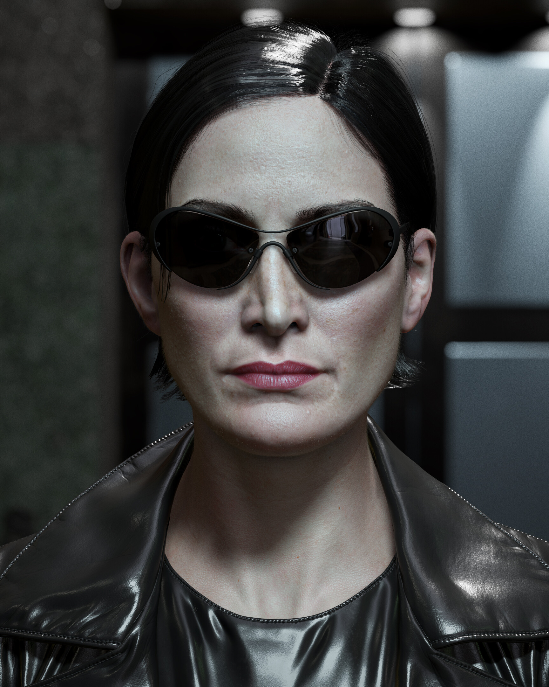
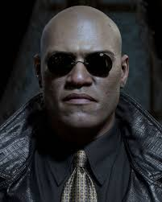
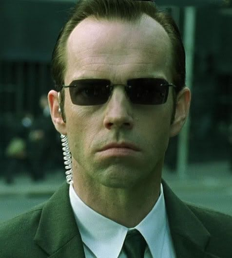

-
Neo

Descrição
O protagonista principal, é um hacker que descobre a verdadeira natureza da realidade e se torna o escolhido destinado a libertar a humanidade da Matrix.
-
Trinity
Descrição
Trinity é uma membro da tripulação da nave Nabucodonosor e se torna uma aliada crucial de Neo.
-
Morpheus
Descrição
Morpheus é o líder da resistência humana contra as máquinas e é responsável por encontrar e recrutar Neo para a causa.
-
Agente Smith
Descrição
O Agente Smith é um programa da Matrix encarregado de eliminar qualquer ameaça à estabilidade do sistema, incluindo Neo e os outros rebeldes humanos.